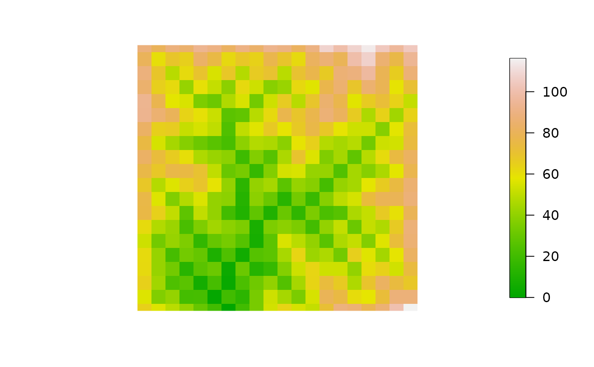

Plot 2D map of elevation generated by an OCN
draw_elev2D_OCN.RdFunction that plots the 2D elevation map generated by an OCN.
Usage
draw_elev2D_OCN(OCN, colPalette = terrain.colors(1000, alpha = 1),
addLegend = TRUE, drawRiver = FALSE, thrADraw = 0.002*OCN$FD$nNodes*OCN$cellsize^2,
riverColor = "#00BFFF", min_lwd = 0.5, max_lwd = 5, args_imagePlot = list())Arguments
- OCN
A
riverobject as produced bylandscape_OCN.- colPalette
Color palette used for the plot.
- addLegend
Logical. If
TRUE,image.plotis used to display the legend; as a result, elements (e.g. node coordinates) subsequently plotted of on top of the 2D elevation map might be wrongly positioned.- drawRiver
Logical. If
TRUE, draw the OCN on top of the elevation map.- thrADraw
Threshold drainage area value used to display the network.
- riverColor
Color used to display the OCN (only effective if
drawRiver = TRUE).- min_lwd, max_lwd
Minimum and maximum values of line width used to display the OCN (actual line width is proportional to the square root of drainage area).
- args_imagePlot
List of arguments passed to
imagePlot(or toimageifaddLegend = FALSE). For example, argumentsmallplotcan be used to specify the plot coordinates for the legend.
Examples
# 1) draw 2D map of a 20x20 OCN with default settings
draw_elev2D_OCN(landscape_OCN(OCN_20))
